Overview
Module 1: To normalize the core depolymerization monomers of lignin into VA, we verified single-enzyme, dual-enzyme, and multi-enzyme cascade systems[1–3] and constructed the Progo, Nov1f, Vdh pathway, successfully confirming the feasibility of the full pathway and providing an economical large-scale fermentation strategy for subsequent studies.
Module 2: To improve the efficiency of ODM, the key rate-limiting enzyme in the conversion of VA to 4-HB, we validated the biosensor (BWΔcodA-gYB2k-pobRWT-PpobA*2-mCherry-codA-Cmr) and performed primary screening of mutated ODM. After enrichment and validation of high-conversion strains, we obtained a mutant exhibiting 29.28-fold the conversion of the wild type, providing a feasible solution for establishing the completely non-natural VA utilization pathway.
Module 3: To achieve the conversion of VA to Pyr[4], we constructed a multi-enzyme pathway and a biosensor (BWΔgldAΔmaeBΔpykF) that couples cellular growth with in vivo Pyr levels, successfully confirming the feasibility of the full pathway. We further attempted to establish an RBS mutant library to screen mutants with higher conversion efficiency, making the entire project greener.
Module 4: To efficiently screen ODM mutants, we independently built a sustainable, high-throughput, low-cost microfluidic screening platform[5,6] that serves our laboratory team, and independently developed the corresponding control program. For details, see:Hardware Part 3:Result
Module 1: From Lignin to VA--The Starting Point
Validation of single enzymes
To verify each step of the proposed pathway, we expressed Progo, Nov1f, and Vdh separately by HPLC. Progo converted 4-n-propylguaiacol (4-PG) to isoeugenol[1,2], reaching a reported yield of 6.08% after 3h (Figure 1A). Nov1f converted isoeugenol to vanillin[2], with a reported yield of 86.8% after 3h (Figure 1B). Vdh oxidized vanillin to vanillic acid[7] in the presence of NAD⁺, and the reported yield reached 85.5% after 6h (Figure 1C).
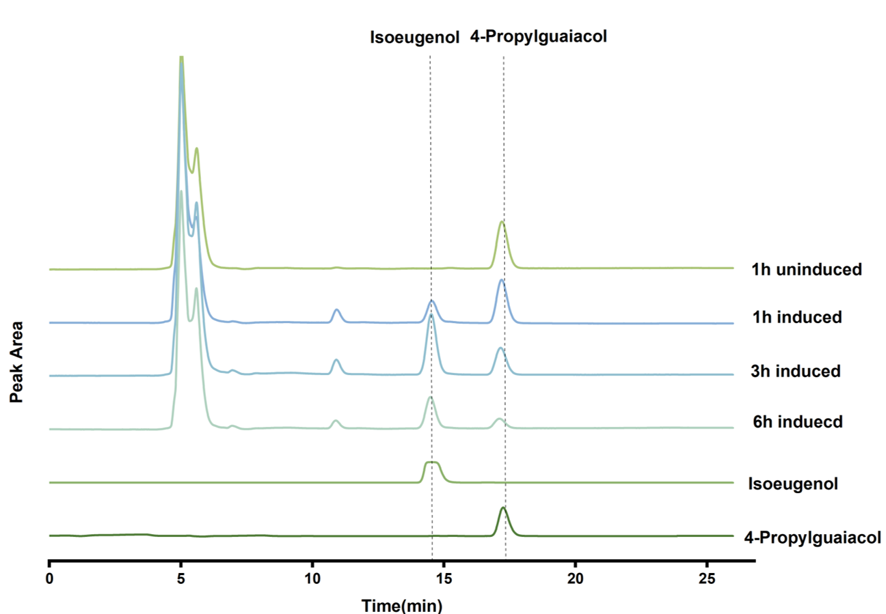
(A)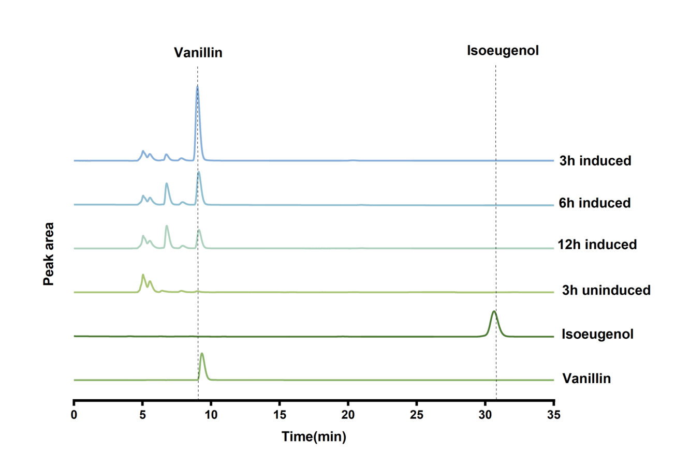
(B)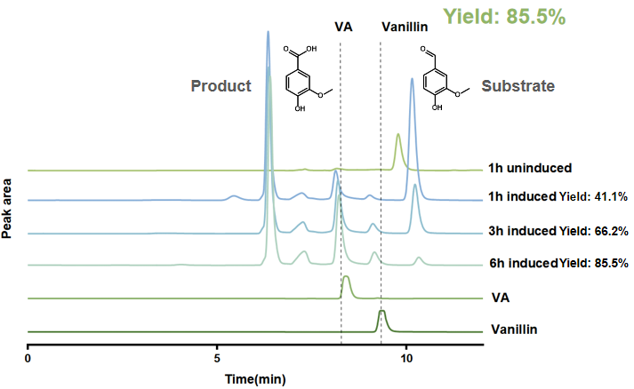
(C)Validation of a dual-enzyme module
We next tested whether the enzymes retained activity when expressed as paired modules. Whole cells carrying pYB1a-progo-nov1f produced vanillin from 4-PG, with reported yields of 2.68% after 1 h and 2.27% after 3 h (Figure 2D). Whole cells expressing Vdh and Nox produced vanillic acid from vanillin. The reported yields were 23.3% after 3 h, 35.3% after 6 h, and 33.2% after 12 h (Figure 2E).
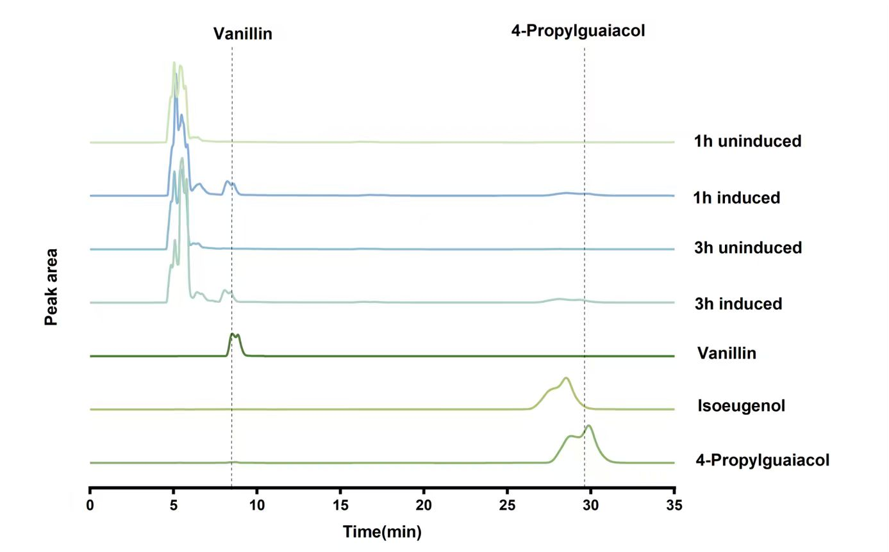
(D)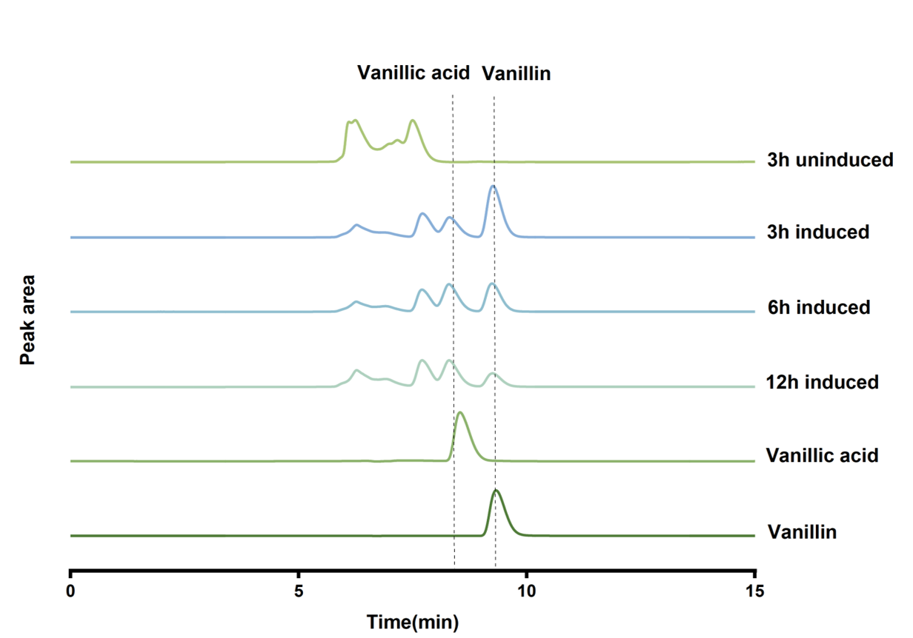
(E)Validation of a multi-enzyme cascade system
Finally, we tested whether the combined system could produce vanillic acid (VA) from 4-PG. HPLC analysis of the reaction mixture collected after 6 h showed a peak in the VA retention-time region (Figure 3). Based on the quantification reported in the figure, the complete cascade achieved a VA yield of 1.62%, a result supports formation of the target end product.
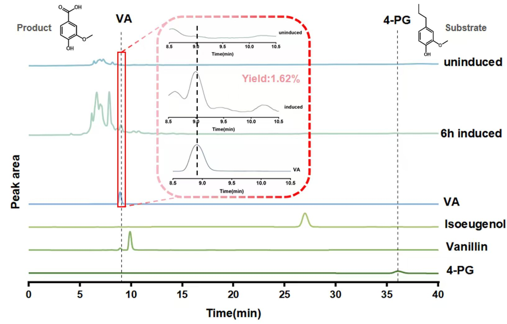
Module 2: From VA to CHA--The Core Module
Characterization of the PobR‑Based Biosensor
To perform high‑throughput screening of the ODM mutant library, we comprehensively characterized the performance of the whole‑cell biosensor strain BWΔcodA-gYB2k-pobRWT-PpobA*2-mCherry-codA-Cmr[8]. Exogenous 4‑HB at gradient concentrations was supplemented into the system, and normalized fluorescence signals (RFP/OD600) were recorded as the readout (Figure 4). The biosensor exhibited an obvious 4‑HB‑dependent response: fluorescence remained at a low basal level under low 4‑HB concentrations; as the 4‑HB concentration gradually increased, the normalized fluorescence signal rose sharply and finally reached signal saturation at high substrate concentrations. This result confirmed that the biosensor constructed in this study could quantitatively convert intracellular 4‑HB concentration changes into instrument‑detectable fluorescent optical signals.
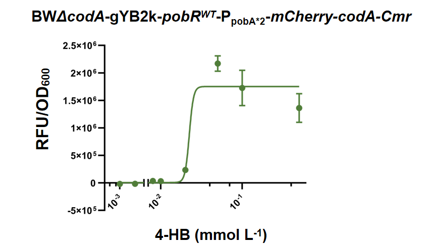
We further set a chloramphenicol concentration gradient and determined the cell growth of biosensor strains with and without exogenous 4‑HB supplementation (Figure 5). In the absence of the effector molecule 4‑HB, elevated chloramphenicol concentration exerted strong growth inhibition on strains. After exogenous 4‑HB was supplemented, ligand‑activated PobR relieved transcriptional repression and drove high‑level expression of the downstream chloramphenicol‑resistance gene Cmr[8], which markedly improved the growth capacity of biosensor strains under chloramphenicol selection pressure. Combined assays of fluorescence quantification and cell‑growth phenotypes demonstrated that this dual‑output biosensor could reliably report intracellular 4‑HB abundance via both fluorescent signals and cell‑growth phenotypes, and fully met the experimental requirements for subsequent high‑throughput screening of mutant libraries.
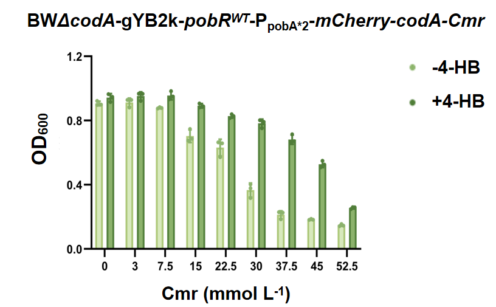
Biosensor‑Assisted Screening and HPLC Validation of ODM Variants
In this study, BWΔcodA-gYB2k-pobRWT-PpobA*2-mCherry-codA-Cmr/pYB1a-odm was used for mutant screening, with parallel negative‑control groups including DH5α-pYB1a-eGFP; BWΔcodA-gYB2k-pobRWT-PpobA*2-mCherry-codA-Cmr/pYB1a-odm, and the host strain BWΔcodA. Under chloramphenicol selection pressure, strains harboring high‑activity ODM variants could catalyze the substrate vanillic acid (VA) to produce abundant 4‑HB[9]. Accumulated 4‑HB activated the PobR sensing module and conferred a chloramphenicol‑resistance phenotype to host cells[8]. Consequently, clones expressing high‑activity ODM possessed prominent growth competitive advantages over strains carrying low‑activity or inactive ODM variants. Acting as an efficient biological filter, the PobR biosensor completed pre‑enrichment of positive clones prior to instrumental quantitative detection, greatly reducing the experimental workload for subsequent high‑precision enzyme‑activity assays.
The ODM mutant library was constructed by random mutagenesis via error‑prone PCR, and three rounds of subculture enrichment were performed using the biosensor‑assisted screening system. After primary biosensor‑assisted screening, 29 candidate clones were picked from Mutant Library A and subjected to direct HPLC quantification for 4‑HB production (Figure 6). Among the 29 candidate clones, 20 ODM variants displayed higher catalytic activity than wild‑type ODM, demonstrating the excellent positive‑mutant enrichment capacity of this PobR biosensor‑based screening platform.
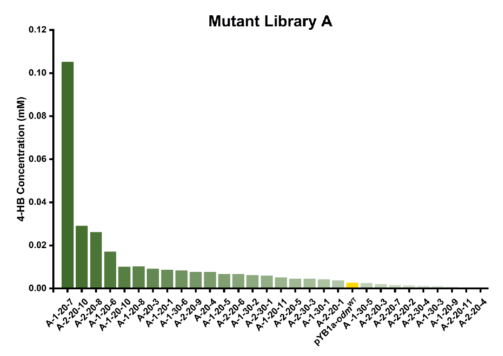
The best‑performing mutant in primary screening yielded 4‑HB at 43.75‑fold of the level produced by wild‑type ODM. Three independent biological replicates for rescreening verified that this superior mutant still achieved an average 4‑HB yield of 29.28‑fold relative to wild‑type ODM (Figure 6). Representative HPLC chromatograms clearly showed the characteristic product peak of 4‑HB generated by catalytic reaction of the screened ODM mutants (Figure 7). These results verified that the PobR biosensor successfully coupled the ODM‑driven biochemical reaction of 4‑HB biosynthesis with two quantitatively measurable cellular phenotypes: mCherry fluorescence output and chloramphenicol resistance. Through the combination of biosensor‑mediated pre‑enrichment and HPLC re‑validation, multiple ODM variants with improved catalytic performance were obtained, providing critical experimental materials for further dissecting the molecular mechanism behind activity enhancement of ODM demethoxylase.
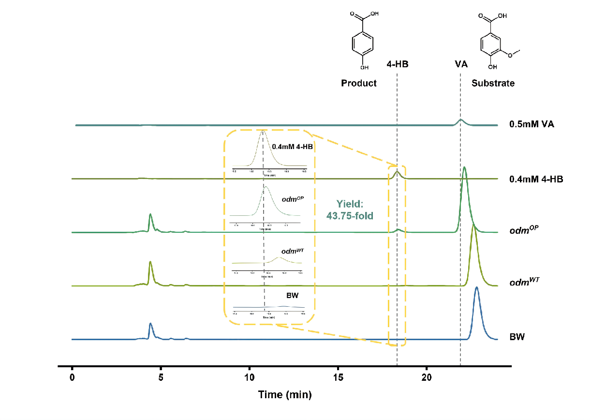
Module 3: From VA to Pyr--Toward a Fully Green Route
Within the overall research framework for high-value valorization of lignin-derived carbon sources, vanillic acid (VA) serves as a unified metabolic entry point that channels structurally diverse lignin-derived aromatic compounds into central metabolic pathways. The research objectives of this module are: (1) to construct an artificially designed six-step biosynthetic pathway that converts vanillic acid into pyruvate; (2) to verify the intracellular function of this pathway using a growth-coupled pyruvate auxotrophic whole-cell biosensor; (3) to perform ribosome-binding-site (RBS)-based directed evolution on downstream rate-limiting genes so as to enhance pathway metabolic flux and pyruvate titer. Intracellularly synthesized pyruvate can replenish the co-substrate demand of the downstream module that converts 4-hydroxybenzoic acid (4-HB) into chorismate (CHA). This renders the entire lignin valorization process greener and improves its sustainability.
Pyruvate Auxotrophic Biosensor Strain
To translate pyruvate production into a selectable growth phenotype, an Escherichia coli BW ΔgldA ΔmaeB ΔpykF triple-gene knockout strain was constructed as a growth-coupled whole-cell biosensor. After knocking out three endogenous pyruvate-synthesis-related genes (GldA, MaeB and PykF), the strain cannot synthesize sufficient pyruvate to sustain normal cell proliferation and exhibits poor intrinsic growth. Its survival depends on either exogenous pyruvate or pyruvate generated by the heterologously introduced pathway. This design directly links intracellular pyruvate levels to cellular growth rates, providing a readout for pathway functional validation and subsequent directed-evolution screening.
The response performance of the biosensor was assayed in M9 minimal medium supplemented with serially graded sodium pyruvate. Four concentration gradients (0, 1, 2, 3 g/L) were set in a 96-well plate. OD₆₀₀ was measured with a microplate reader to record bacterial growth curves and quantitatively analyze the dose-effect relationship.
The results demonstrated a positive correlation between cell growth and exogenous pyruvate concentration. The 3 g/L group showed the optimal growth; growth gradually declined in the 2 g/L and 1 g/L groups. Growth was drastically repressed in the 0 g/L group, whose growth level was markedly lower than that of the wild-type BW25113 control. These findings indicate that the biosensor exhibits reliable dose-dependent responses within the tested concentration range and is suitable for subsequent pathway evaluation and growth-phenotype-based screening (Figure 8).
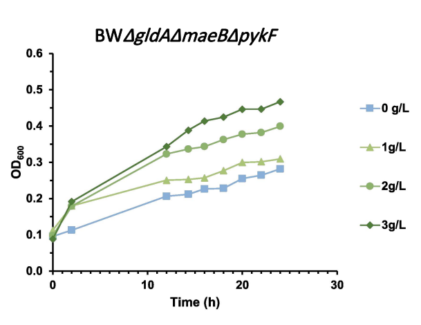
Functional Validation of the Vanillic-Acid-to-Pyruvate Biosynthetic Pathway
The conversion of vanillic acid to pyruvate constitutes an artificially designed six-enzyme cascade pathway. First, VanAB oxygen-demethylase from Pseudomonas putida catalyzes the demethylation of vanillic acid (VA) to produce protocatechuic acid (PCA). Next, AroY protocatechuate decarboxylase from Klebsiella pneumoniae decarboxylates protocatechuic acid to yield catechol (CA)[10,11]. Catechol is then cleaved by DmpB catechol 2,3-dioxygenase from Pseudomonas sp. CF600 to form 2-hydroxymuconate semialdehyde (2-HMSA), which is further converted by DmpD hydrolase from the same strain into 2-hydroxy-2,4-hexadienoate (2-HTDA)[12,13]. Finally, MhpD 2-keto-4-pentenoate hydratase (UniProtKB accession: P77608) from E. coli K-12 hydrates 2-hydroxy-2,4-hexadienoate into 4-hydroxy-2-oxopentanoate (HOPA)[14,15]. MhpE 4-hydroxy-2-oxopentanoate aldolase subsequently cleaves HOPA to generate pyruvate.[14,15]
To improve pathway assembly flexibility and plasmid compatibility, the full vanillic acid-to-pyruvate pathway was assembled on two separate plasmids, pLB1s-vanAB-aroY-dmpD and pYB1a-dmpB-mhpD-mhpE. These two plasmids carry compatible replicons and distinct antibiotic resistance markers, enabling stable co-replication and co-selection within a single host. Both plasmids were co-transformed into the pyruvate-auxotrophic biosensor strain BW ΔgldA ΔmaeB ΔpykF-pLB1s-vanAB-aroY-dmpD/pYB1a-dmpB-mhpD-mhpE, which reconstitutes the complete pathway to transform vanillic acid into pyruvate.
After confirming robust biosensor performance, multiple experimental conditions were set to characterize pathway function. Four culture conditions were established in M9 medium: (+ara +VA) with both arabinose inducer and vanillic-acid substrate; (−ara +VA) with substrate but no inducer; (+ara) with inducer but no substrate; (−ara) with neither inducer nor substrate. Cell proliferation was monitored by continuous OD₆₀₀ measurement.
Marked proliferation was observed only when both inducer and vanillic-acid substrate were present. The (+ara +VA) group exhibited the fastest growth rate, significantly outperforming the other three groups, followed by the (−ara +VA) group. The (+ara) and (−ara) groups showed the slowest growth. These results prove that pyruvate is produced only upon pathway induction in the presence of vanillic-acid substrate. The reconstructed vanillic-acid-to-pyruvate pathway is fully functional in the host strain; it synthesizes pyruvate to rescue the nutritional auxotrophy and successfully couples pathway metabolic output to the biosensor growth phenotype (Figure 9).
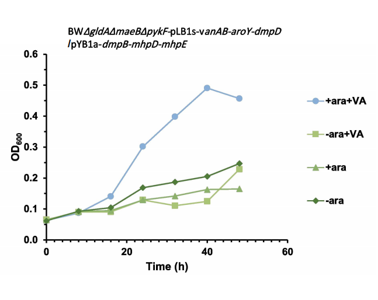
RBS Library Construction and High-Throughput Directed Evolution
To further boost pathway conversion efficiency and pyruvate titer, random-mutagenesis ribosome-binding-site (RBS) libraries were constructed for three downstream genes: dmpB, mhpD and mhpE. Degenerate primers (NNNNN) were used to introduce random mutations at the RBS of target genes, generating a panel of variants with the aim of elevating overall pathway metabolic flux. Library plasmids were extracted and co-transformed with pLB1s-vanAB-aroY-dmpD into the biosensor strain BW ΔgldA ΔmaeB ΔpykF. The wild-type dual-plasmid biosensor strain carrying unmutated RBS sequences was used as the control.
Mutant-library strains and wild-type controls were subjected to high-throughput growth-phenotype-based screening[16] in M9 auxotrophic medium supplemented with vanillic-acid substrate. OD₆₀₀ was monitored in real time, and cellular proliferation was recorded to compare growth dynamics between the RBS-mutant library population and wild-type pathway strains.
Growth-phenotype-based screening of the RBS mutant library revealed that wild-type strains displayed higher growth levels than RBS-mutant strains across most time points. Growth levels of the two groups were comparable at only a small number of time points. Under the current screening scale, no mutants with improved activity were recovered (Figure 10).
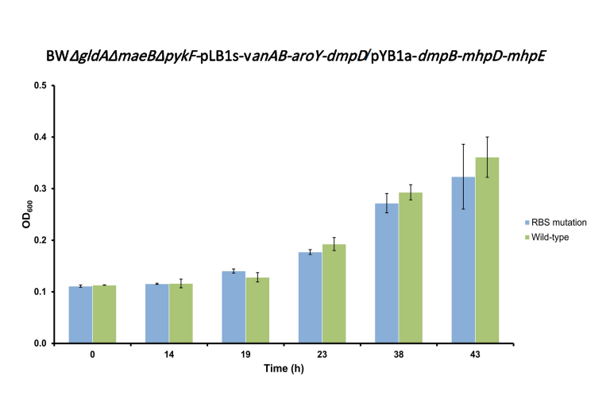
In summary, this study accomplished the construction and functional validation of an artificially designed complete vanillic-acid-to-pyruvate biosynthetic pathway. A pyruvate-auxotrophic, growth-coupled whole-cell biosensor was established to reliably convert pathway output signals into growth phenotypes. An RBS-mutagenesis-based directed-evolution screening platform was set up. Intracellularly generated pyruvate can replenish co-substrate consumption for the downstream 4-HB-to-CHA module, supporting the development of a greener lignin high-value-upgrading route. Future work will expand screening throughput and enrich the RBS mutant library to isolate high-performance variants with enhanced pyruvate-synthesis capacity. The biosensor-driven screening workflow reported herein provides a stable, robust and expandable technical platform for future directed evolution of this pathway.
References
[1]Guo, Y., Alvigini, L., Trajkovic, M., et al. Structure- and computational-aided
engineering of an oxidase to produce isoeugenol from a lignin-derived compound.
Nat. Commun. 13, 7195 (2022). DOI: https://doi.org/10.1038/s41467-022-34912-3
[2]De Simone, M., Alvigini, L., Alonso-Cotchico, L., et al. Rationally guided improvement
of NOV1 dioxygenase for the conversion of lignin-derived isoeugenol to vanillin.
Biochemistry. 62, 419-428 (2023). DOI: https://doi.org/10.1021/acs.biochem.2c00168
[3]Xu, L., Sethupathy, S., Liang, Z., et al. NAD⁺ regeneration-coupled enzymatic
bioconversion of lignin-derived vanillin into VA: A cleaner production approach. Ind.
Crops Prod.222, 119921 (2024). DOI: https://doi.org/10.1016/j.indcrop.2024.119921
[4]Johnson, C. W. & Beckham, G. T. Aromatic catabolic pathway selection for optimal
production of Pyr and lactate from lignin. Metab. Eng. 28, 240-247 (2015). DOI:
https://doi.org/10.1016/j.ymben.2015.01.005
[5]Stucki, A., Vallapurackal, J., Ward, T. R. & Dittrich, P. S. Droplet microfluidics
and directed evolution of enzymes: An intertwined journey. Angew. Chem. Int. Ed.
60, 24368-24387 (2021). DOI: https://doi.org/10.1002/anie.202016154
[6]Panwar, J., Autour, A. & Merten, C. A. Design and construction of a microfluidics
workstation for high-throughput multi-wavelength fluorescence and transmittance activated
droplet analysis and sorting. Nat. Protoc. 18, 1090-1136 (2023). DOI:
https://doi.org/10.1038/s41596-022-00796-2
[7]Marić, I., Guo, Y., Fürst, M. J. L. J., et al. A one-pot, whole-cell biocatalysis
approach for vanillin production using lignin oil. Adv. Synth. Catal. 365,
3987-3995 (2023). DOI: https://doi.org/10.1002/adsc.202300868
[8]Liu, P., Jin, Q., Li, X., et al. Directed evolution and metabolic engineering generate
an Escherichia coli cell factory for de novo production of 4-hydroxymandelate.
Bioresour. Technol. 413, 131497 (2024). DOI:
https://doi.org/10.1016/j.biortech.2024.131497
[9]Choi, W. J., Byun, J. W., Ahn, J. H., et al. Process of biologically producing a
p-hydroxybenzoic acid. US Patent 9,206,449 B2, Samsung Electronics Co., Ltd. (2015).
Patent record: US9206449B2
[10]Weber, C., Brückner, C., Weinreb, S., Lehr, C., Essl, C., & Boles, E. (2012).
Biosynthesis of cis , cis -Muconic Acid and Its Aromatic Precursors, Catechol and
Protocatechuic Acid, from Renewable Feedstocks by Saccharomyces cerevisiae. Applied and
Environmental Microbiology, 78(23), 8421–8430. https://doi.org/10.1128/aem.01983-12
[11] Johnson, C. W., Salvachúa, D., Khanna, P., Smith, H., Peterson, D. J. & Beckham,
G. T. Enhancing muconic acid production from glucose and lignin-derived aromatic compounds
via increased protocatechuate decarboxylase activity. Metab. Eng. Commun. 3, 111–119
(2016). DOI: https://doi.org/10.1016/j.meteno.2016.04.002
[12] Harwood, C. S., & Parales, R. E. (1996). THE Β-KETOADIPATE PATHWAY AND THE
BIOLOGY OF SELF-IDENTITY. Annual Review of Microbiology, 50(1), 553–590.
https://doi.org/10.1146/annurev.micro.50.1.553
[13] Nordlund, I. & Shingler, V. Nucleotide sequences of the meta-cleavage pathway
enzymes 2-hydroxymuconic semialdehyde dehydrogenase and 2-hydroxymuconic semialdehyde
hydrolase from Pseudomonas CF600. Biochim. Biophys. Acta 1049, 227–230 (1990). DOI:
https://doi.org/10.1016/0167-4781(90)90046-5
[14] Ferrández, A., Garciá, J. L., & Díaz, E. (1997). Genetic characterization and
expression in heterologous hosts of the 3-(3-hydroxyphenyl)propionate catabolic pathway
of Escherichia coli K-12. Journal of Bacteriology, 179(8), 2573–2581.
https://doi.org/10.1128/jb.179.8.2573-2581.1997
[15] Torres, B., Porras, G., García, J. L., & Díaz, E. (2003). Regulation of the mhp
Cluster Responsible for 3-(3-Hydroxyphenyl)propionic Acid Degradation in Escherichia
coli. Journal of Biological Chemistry, 278(30), 27575–27585.
https://doi.org/10.1074/jbc.m303245200
Williams, T. C., Pretorius, I. S., & Paulsen, I. T. (2016). Synthetic evolution of
metabolic productivity using biosensors. Trends in Biotechnology, 34(5), 371–381.
https://doi.org/10.1016/j.tibtech.2016.02.002